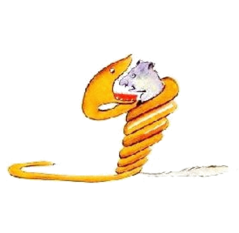
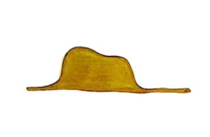
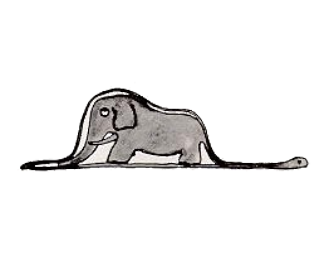

1
Quande yo esset in li etá de six annus, yo videt unvez in un libre pri li jungle, quel havet li titul „Experit racontas“, un magnific image. It monstrat un gigant-serpente, qualmen it devorat un bestie. Ci es un copie del image.

In li libre esset scrit. "Li boas devora su preda in tot sin machar it. Pos to ili ne posse mover se e dormi six mensus por digester it."
Tande yo hat mult reflectet pri li aventuras in li jungle e yo finit per un color-crayon mi unesim dessine. Mi dessine nró. 1. It aspectet talmen:

Yo ha monstrat li grand homes mi mastre-ovre e yo questionat les si mi dessine timenta les.
Ili respondet: a me "Pro noi deve timer nos pro un chapel?"
Ma mi dessine ne monstrat un chapel. It monstrat un gigant-serpente, quel digeste un elefant. Pos to yo ha dessinat li interiore del boa, por explicar it al grand homes. Ili ya besona sempre explicationes.
Ci es mi dessine nró. 2:

Li grand homes ha consiliat me cessar dessinar apert o cludet gigant-serpentes e que yo mey plu interessar me por geografie, historie, calcular e grammatica. Talmen evenit it que yo abandonat un grand cariera – nam li de un pictor – ja in li etá de six annus. Li dessuccesse de mi dessines nró. 1 e nró. 2 hat descorageat me. Li grand homes comprende nequande alquó self e it es tro penosi por li infantes explicar les sempre e sempre denov alquó.
Do yo esset fortiat selecter un altri profession e yo aprendet aviar. Yo circumaviat partú in li munde e li geografie ha auxiliat me vermen mult pri to. Yo posset a prim vise distinter China de Arizona. To es tre practic si on ha perdit li via in li nocte. In li curse de mi vive yo esset in contacte con mult seriosi persones. Yo havet relationes con mult adultes e yo havet li chance observar les totmen ex li proximitá. To ne havet un bon efecte a mi opinion pri ili.
Si yo incontrat alcun, qui sembla a me un poc plu astut, yo provat it con mi dessine nró. 1, quel yo hat conservat tre cuidosimen. Yo volet vider, ca il es vermen astut. Ma chascun vez yo recivet li response: "To es un chapel." Pos to yo conversat con il ni pri boas, ni pri jungles, ni pri li stelles. Yo consentit con su vise-punctu. Yo conversat con il pri bridge, golf, politica e cravattes. E li grand hom esset tre satisfat har incontrat un tal rasonabil mann.